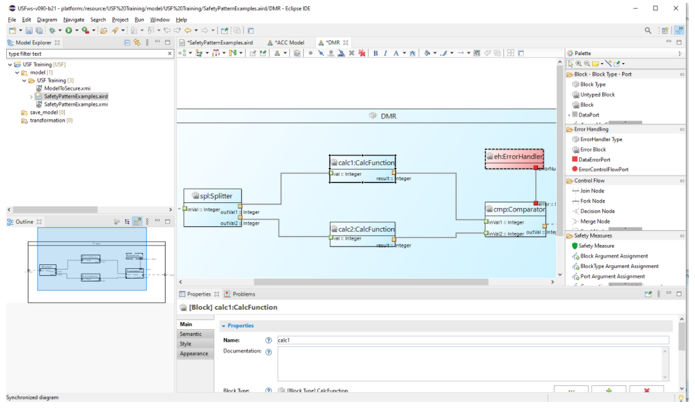

Installation
The Eclipse PlugIn for SafetyModeler is provided as a local update site. It can be requested at ScopeSET by simply sending an email to info@scopeset.de.
SafetyModeler is a graphical editor to view and create USF models provided as an Eclipse plugin. It allows to create functional block models with data and control flows, definition of data types as well as safety measures to secure the functional model.
The editor consists of several views showing different aspects of a USF model. Most views can be accessed from the editor’s dashboard. The Block Diagrams and Type Diagrams show graphical aspects of the USF model. The Properties view and Stereotype and Parameters view show non-graphical properties of model elements.

The Block Diagram view and Type Diagram view share a similar setup. On the left side is a big canvas located, where model elements are displayed as boxes and connections. This diagram area offers on the top a toolbar with some tools for the visualization of the diagram, such as zoom and layout tools. On the right side there is a palette of tools. Those tools can be used to create new model elements (e.g. blocks, ports or connections). Tools are organized by categories for a better overview.
More information on how to use the editor can be found on the following pages:
The Eclipse PlugIn for SafetyModeler is provided as a local update site. It can be requested at ScopeSET by simply sending an email to info@scopeset.de.
The editor consists of several views showing different aspects of a USF model. Most views can be accessed from the editor’s dashboard. The Block Diagrams and Type Diagrams show graphical aspects of the USF model. The Properties view show non-graphical properties of model elements selected in the UI. The transformation editor can be opened via double clicking on transformation files (*.usft) in the project explorer or using a context menu command for SafetymechanismTypes.
Here we give a brief overview on how start with SafetyModeler by creating a new project and models from scratch.
Some Safety Measure are provided in a zip file as an exported model for reuse.
Description of known limitations and workaraounds.